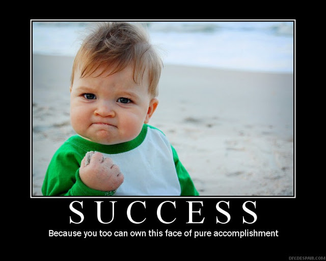

Originally created by Justin Pope
Stolen by @danclien
Make sure the code works
Make sure the code works
Still important, but not the main focus.
Become a better programmer
1. Find a piece of code to review
Work with the developer to find something they worked on
2. Quick UI or functional test
Make sure it works and understand how it works
3. Review the code looking for potential changes
Review aggregate changesets to cutdown on noise
Keep a list of all recommended changes
Should take around an hour to review
3. Summarize notes
Summarize the list into must, should, and could/would
Should take around 15 minutes to discuss
Explain the thought process behind all the recommended changes
Plan a follow up code review or pairing session if needed
Send a written summary of the must, should, and could/would.
Code reviews once a week to become a better programmer
Prepare beforehand by dividing recommendations into must, should, and could/would.
Explain the reasoning behind the changes
Send a written summary
What do you think?